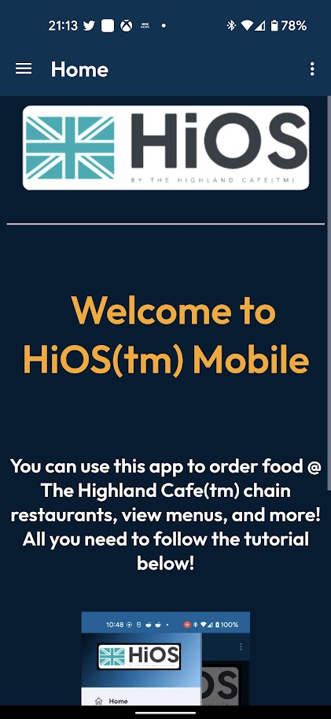
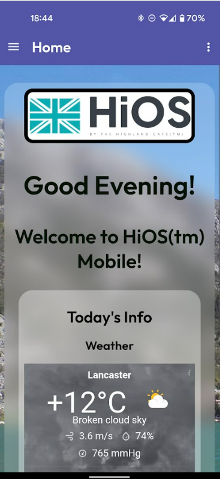
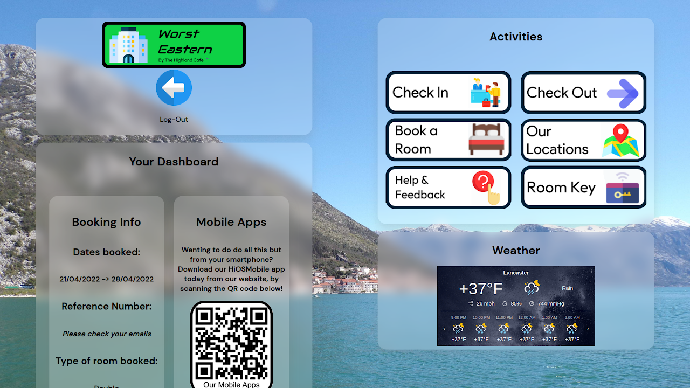

HiMaterial Versions
HiMaterial 1
HiMaterial 1 was released in December 2021 and was the first version of our new HiMaterial design language that replaced HiOSUX, which was used on the first version of HiOSDesktop.
HiMaterial 2
HiMaterial 2 was the second iteration of our main design language; HiMaterial 2 debuted on HiOSMobile version 1.2, and the new HiOSUnified software.
 HiMaterial 3
HiMaterial 3 was a game changing update to the design language of HiOSMobile.
This included the debut of the HiOSMobile dark theme, along with the first opaque card-focused design, that made the app look properly professional for the first time.
Wanting to test out HiMaterial 3? Try the legacy version of HiOSMobileWeb!
HiOSMobileWeb with HiMaterial 3
HiMaterial 4
HiMaterial 4 had less major design updates, and was a very welcome refinement based on user feedback on HiMaterial 3. This update included a fully light light-mode, and a fully dark dark-mode.
HiOSUnified2
HiMaterial 5
HiMaterial 5 was a huge update that bridged the gap between Google's Material Design v3, and the HiOSMobile app design. With this new HiMaterial 5 design, it came with the new top navigation back buttons, and the left-aligned titles. This update also brought the new high-quality native buttons, and departs from the png navigation buttons at the bottom and top. We also changed some of our design elements recently to better match the Material 3 guidelines, and we made the CSS design files more streamlined with variables defining colours rather than defining them over and over again for every element. Around the time of creating this iteration of HiMaterial, we also created native Settings, Help Center, and feedback pages. We went through a few different fonts with this design, such as Cantarell and Prompt, but we settled on Outfit since it fitted the rest of the The Highland Cafe™️ Enterprises' design philosophy at the time.
HiMaterial 5.1
HiMaterial 5.1 was more of a minor update based on HiMaterial 5, with minor but welcome improvements and tweaks to the overall design language. With this design update, we have made tweaks such as changing the new Dashboard screen back to the original Homescreen, changing the button designs, applying custom colours to specific brand pages such as weB&B (formerly WorstEastern) where we changed the theme to green to match the brand's colour scheme, streamlined the HiMaterial CSS files, making all the corners more rounded, and making the design more accessible.
Welcome/Home page
Restaurant page with overhauled buttons
Hotel page with new colour scheme
Room Key with more rounded corners
HiMaterial 5.2
HiMaterial 5.2 was another minor, but meaningful design language update.
We decided to change the bottom navigation bar to be docked to the bottom, but rounded at each corner, to give a more visually pleasing feeling.
We also did this because the system navigation bar was black, which didn't look very good with the white floating nav bar in light mode.
We also changed the font family of the app and HiOSWebCore to SUSE from Outfit, to make it in line with all of The Highland Cafe™️ Enterprises' other projects.
We have also updated some design elements such as the bottom 'More' flyout in HiOSMobile Lite to match its Android app counterpart.
Welcome/Home page in HiMaterial v5.2
Updated Restaurant page in HiMaterial v5.2

Updated Hotel page in HiMaterial v5.2
Updated Room Key in HiMaterial v5.2
Modernised Settings page
Modernised Help Center
HiOSMobile Lite - Updated 'More' menu design
HiOSMobile Lite - Updated Settings page design
HiMaterial 6
HiMaterial 6 was a massive overhaul of HiOSMobile's design language; HiMaterial 6 was designed with inspiration taken from Google's leaked upcoming Material 3 Expressive design, and HiMaterial 2.
HiMaterial 6 had all of the refinements made in all of version 5's updates, but with the added design changes of 6.
This update re-introduced the concept to HiOSCore of a background image with blurred cards, which were last present in HiMaterial 2. There are a list of pre-defined wallpapers, but users can upload their own.
The font was also changed back to Outfit, and every component was converted to Bootstrap (from v5.3).
Welcome/Home page in HiMaterial v6
A top-level page, HiMaterial v6
A sub-page, HiMaterial v6
Updated Hotel page, HiMaterial v6
New appearance settings for changing background
Pre-defined background optionss